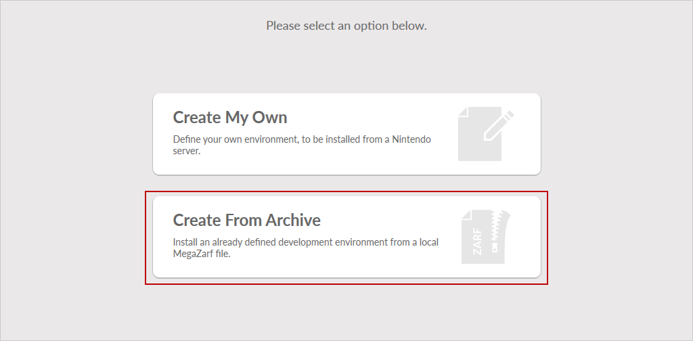
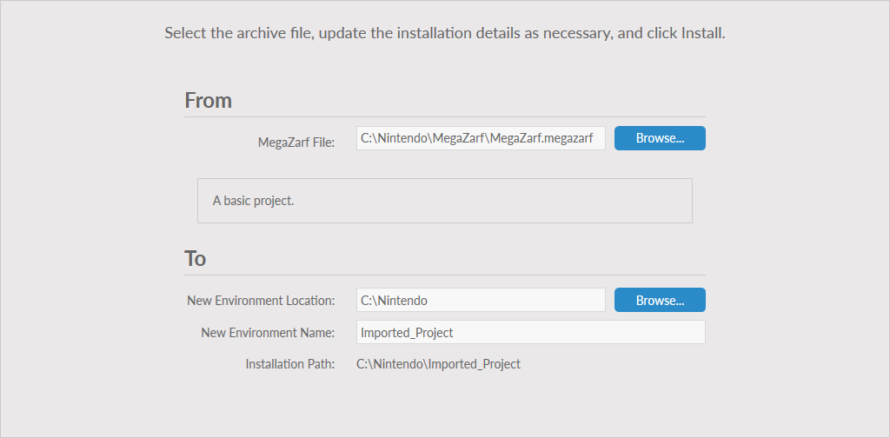

Nintendo Dev Interface (NDI) can import a MegaZarf for creating a new environment. Depending on the process used to create the MegaZarf, a connection to the server may be required. By default, MegaZarf files contain all the required data to recreate the environment they contain.
To use a MegaZarf to create an environment, follow these steps.
- Start NDI and select Dev Environments.
- Click Create From Archive. If there is already an environment on your system, first click New Environment above the environment list on the left of the screen.

- In the MegaZarf File field, click the Browse button to select the MegaZarf to be installed.
- In the New Environment Location and New Environment Name fields, enter a name and location for the environment being created. Note: Some MegaZarf files prevent changes to either the Location, Name, or both.

- Click Install to start the installation process.
- After the installation has completed, click Finish.
- NDI returns to the Dev Environments list and displays the new environment.